15.6. 3-mic通话调试指引
Version |
Date |
Notes |
|---|---|---|
V1.0 |
2023-10-20 |
初始版本 |
点击跳转 通话算法节点配置说明
15.6.1. DMS简述
ENS(Environmental Noise Cancellation)降噪技术，是通过双麦/多麦克风阵列，精准计算通话者说话的方位，在保护主方向目标语音的同时，去除环境中的各种干扰噪声，例如其他人的讲话声、交通工具产生的噪音、风噪声等等，给到远端接听的人以清晰语音
3 mic 降噪系统属于 ENC 的一种。通过3个 mic 相互作用，通话过
程，给到远端接听的人以清晰语音。
顺便提一下，ANC和ENC的区别：
ANC（Active Noise Cancellation，主动降噪）耳机系统通过麦克风采集环境噪声，并将此噪声反相叠加到喇叭端，人耳听到的是相位相反的两种噪声叠加结果，于是达到了消噪的目的。
ANC的受益人是耳机使用者本人，通过ANC功能，让用户自己减少受到环境噪声的影响。
ENC的受益人是通话的另一方，通过ENC功能，减少环境噪声对通话的影响，让对方听到清晰语音。
ANC让自己听感环境更加安静，ENC让通话的另一端听感环境更加安静。
1.3MIC降噪数据处理流程如下：
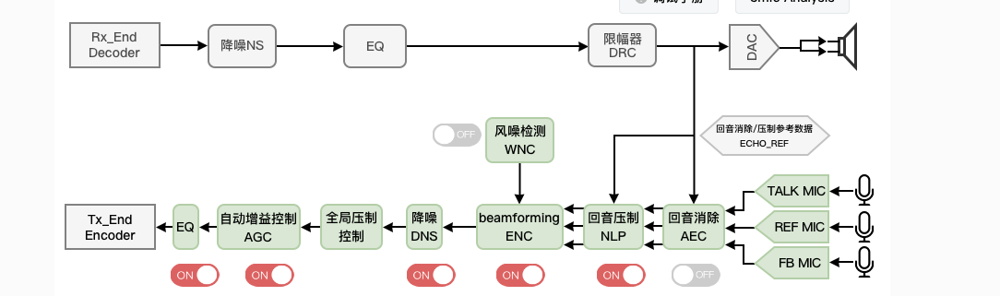2.以下是对于端对端通话过程远端和近端的定义，本手册涉及的远端近端概念，遵照以下框图。

我们讨论的回音，是指远端手机讲话，发送到连接蓝牙设备的近端手机，然后声音从蓝牙设备的speaker发出来，又被蓝牙设备的microphone采集到，通过近端手机发送回远端手机，远端可以延时听到自己讲话的声音。
15.6.2. 多麦ENC开发设计要点
15.6.2.1. 概述
为了方便介绍双麦克风系统相关信息，定义两个mic的连线上指向主mic方向为0°。相对的，指向副mic方向为180°
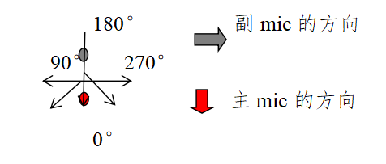
双麦ENC是基于波束成形(beamforming)技术来进行方向性选择的信号处理系统，依赖于不同方位的声音到达两个mic的幅度差和相位差，比如两个平行的mic朝向如下： 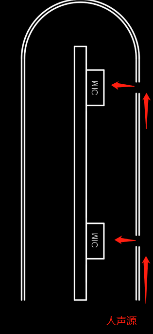
正常情况下，人声到达两个mic的幅度和相位差是这样的：下面的mic的幅度和相位都大于上面的mic。而其他方向的噪声去到这两个mic的幅度差和相位差应该是接近或者上面的mic大于下面的mic的。 双mic降噪目标效果是为了消除声源位于方向为90°至270°之间的声音，实际调试使用过程中，主mic两侧120°范围内的声音被清晰识别到，其余方向被不同程度的消除。
15.6.2.2. Microphone选型规格
Microphone选型规格 |
|
|---|---|
数量 |
3个模拟MIC |
方向性 |
全指向性 |
信噪比 |
>=62dB(A) |
相位 |
±10°@100-7kHz |
15.6.2.3. 声学设计要点
为了能使系统达到最优效果，声学设计上需要有一定的约束，两个mic之间的频响以及相位不要有过大的差异。另外，两个MIC和Speaker之间，应该有减震、密封隔离处理，减少回音传播。 设计要点如下：
（1）MIC间距：15-35mm
（2）MIC一致性（灵敏度和频响）：<=1dB
（3）两个mic到达各自的拾音孔之间的空间尽量限制在一个半径与拾音孔半径一致的圆柱体内，并做好密封，防止与内部腔体连通。两个mic对应的圆柱体空间尽量一致，这样可以保证声音从同样距离到达两个mic的相位以及增益一致。
（4）两个mic距离拾音孔的距离越短，额外附加的频响就越小。但要注意为mic增加减震措施，减少非线性的回声
（5）推荐腔体设计如下：
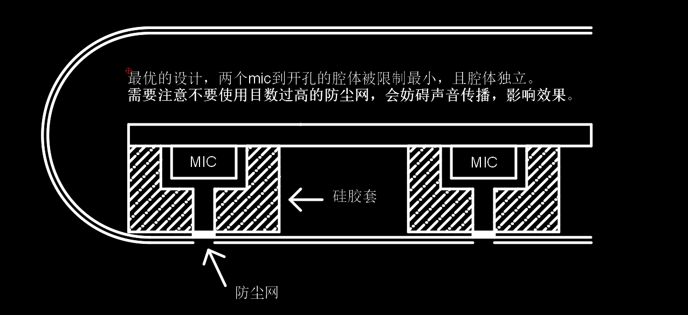 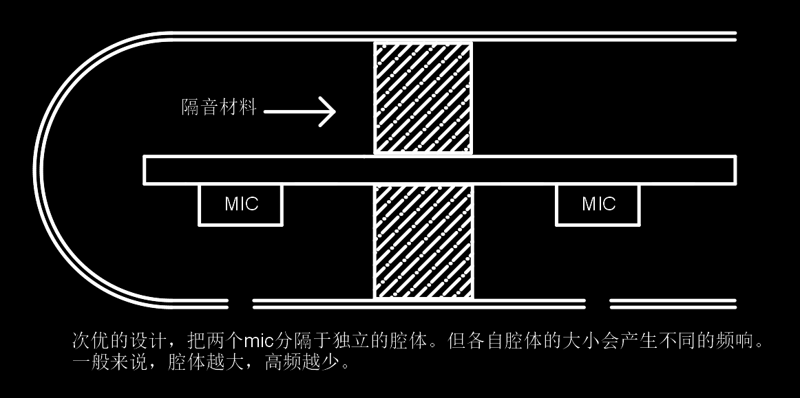
（6）推荐mic位置摆放设计如下：
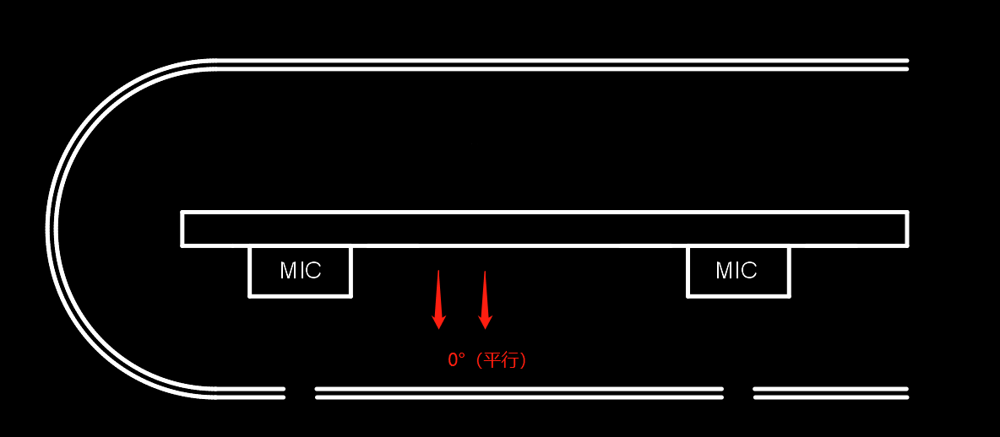 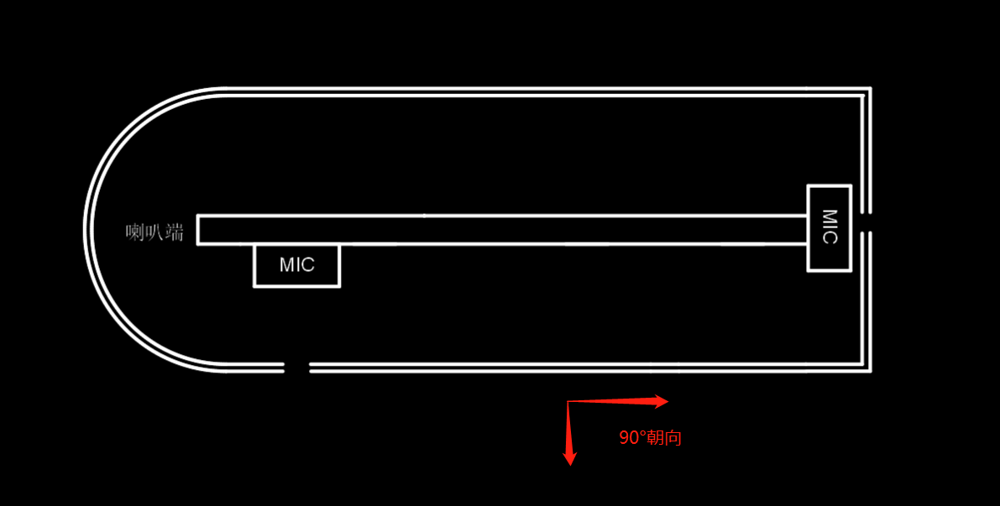 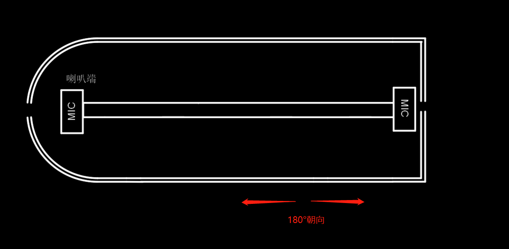
15.6.2.4. 腔体气密性测试
双麦克风降噪算法依赖于不同的声源方向到达两个麦克风之间的相位差与幅度差来达到消除特定范围内噪声的效果。如果外界声音到达麦克风的声音路径除了外壳进音孔外的其他路径的分量较大时则会破坏不同的声源方向到达两个麦克风之间的相位差与幅度差，从而让ENC效果变差。 为了保证外界声音进入到麦克风的能量主要经过外壳进音孔而不是其他路径，需要对麦克风与外壳之间的通道的气密性进行测试。
15.6.2.4.1. 测试步骤
step1：准备一只装配好的耳机，烧写spp音频导出程序

step2：耳机平放于桌面上。放置一个喇叭正对耳机。
step3：用音频导出工具（安卓Audio_tool或者PC端工具）导出两个mic的音频数据
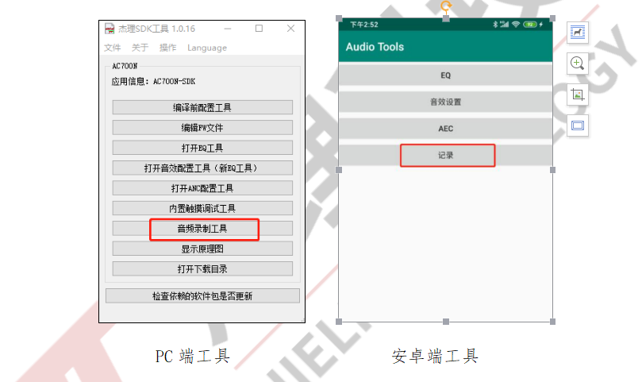step4：喇叭播放一段扫频信号(50Hz-8kHz)，导出两个mic（均不堵）的原始数据。
step5：用替丁胶，橡皮泥或者其他隔音材料堵住
主麦克风进音孔，再播放扫频信号（保持耳机相对于喇叭位置不变），导出两个mic的原始数据。step6：移开堵住主麦克风的替丁胶，橡皮泥或者其他隔音材料
step7：用替丁胶，橡皮泥或者其他隔音材料堵住
副麦克风进音孔，再播放扫频信号（保持耳机相对于喇叭位置不变），导出两个mic的原始数据。step8：结束音频数据记录
15.6.2.4.2. 分析步骤
step1：用音频分析软件打开录音数据
step2：观察接收到的扫频信号有无出现饱和。如果有则减少喇叭音量，重复上面的测试步骤。
step3：用频谱分析工具分别分析，（主、副）麦克风收到的扫频信号与（主、副）麦克风被堵住的时候收到的扫频信号。
step4：为了达到
最佳效果，同一个麦克风堵住的信号频谱相对于没堵住的信号频谱应当有-25dB以上的衰减。
15.6.2.4.3. 数据分析示例
【分析示例1】不同场景录音数据如下：可以看到，两个mic都没有堵的情况下，都可以正常拾取到外部的声音，而堵住其中任何一个mic的进音孔，都会使其拾取到的声音明显突变到很小。 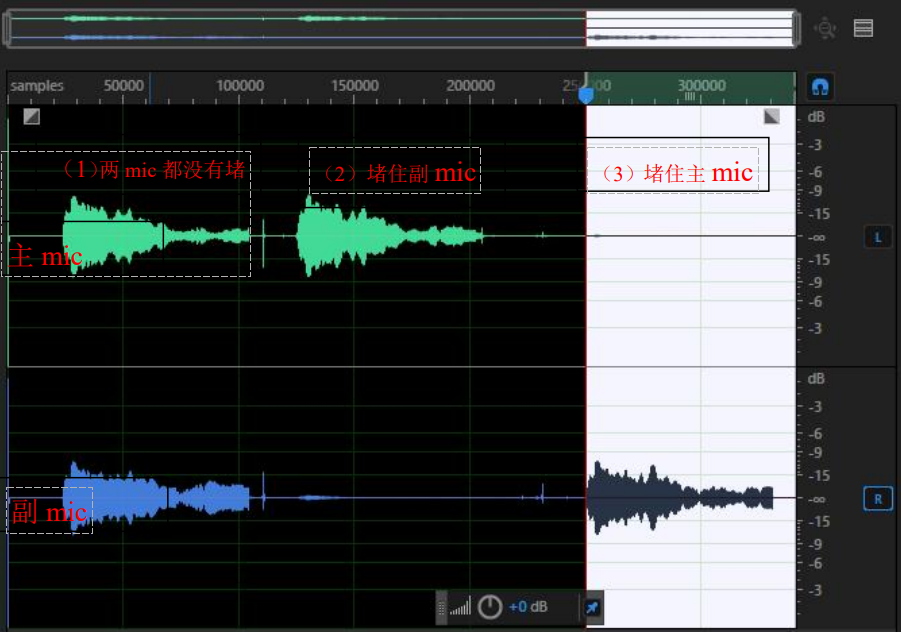
【分析示例2】频响幅度差分析：可以看出，主副mic在堵住前后，有明显的幅度差，证明腔体气密性是合格的。虽然气密性差，也可以调出一定的ENC降噪效果，但达不到理论最优效果。
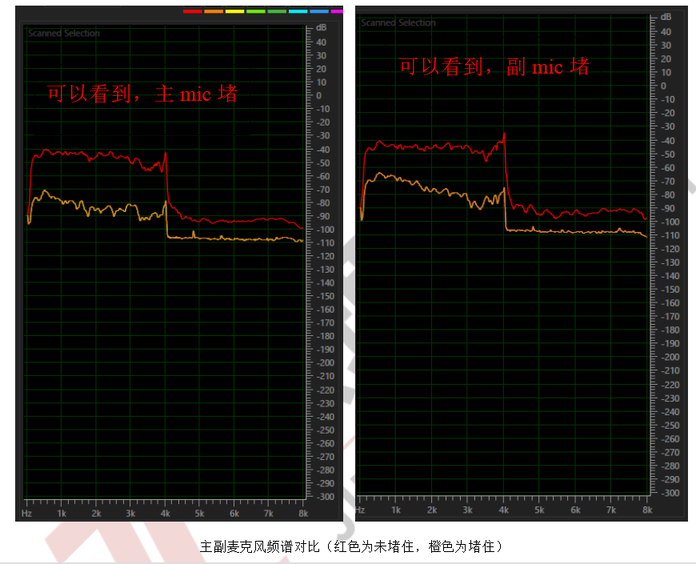
15.6.2.4.4. 双麦降噪耳机气密性常见问题
问题1：使用了胶套，但胶套与外壳有缝隙，细微的缝隙也可以造成巨大的漏气，通过这些缝隙声音传播的声音非常大。应当让胶套比实际的空间稍大，靠装配的压力压紧，这样缝隙就基本被堵住。
问题2：使用质地较硬的硅胶套，装配的时候没办法跟PCB板完全贴合导致漏气的发生。
问题3：在外壳上做了开槽，把麦克风套在里面。这种情况因为外壳是硬质的塑料，与PCB板无法很好地贴合在一起，这种情况可以在麦克风周围增加一圈软性的胶垫来填补缝隙。
问题4：麦克风的进音孔跟外壳开孔成90度。这种情况常见于主麦克风，这种情况可以通过特殊的胶套来保证麦克风的进音孔到外壳的进音孔的气密性，但这种成功率较低，经常因为胶套与外壳，或者与PCB的贴合度问题导致漏气。建议使用外壳开槽，麦克风周围增加一圈软性的胶垫来填补缝隙的方式构造麦克风的进音孔到外壳的进音孔之间的导音管，这样气密性比较容易得到保证。
15.6.2.4.5. 双麦降噪耳机如何增加气密性
当通过气密性测试发现耳机的气密性非常糟糕的情况下，可以使用一些可塑性的隔音物质对麦克风周围的空间进行填充，再测试气密性，从而找到漏气的位置。 一般推荐使用bostik牌的蓝丁胶，这种胶呈胶泥状，有良好的隔音性与可塑性，且易于清理，可以重复使用。但对于一些过于细小的缝隙可能没法封住，这种情况可以使用704硅橡胶，用针筒注射到麦克风的附近，而且这种胶可以在生产中实际使用，但调试过程中不易清理，一般是蓝丁胶无法作用时使用。
调试的过程中应对注意，硅麦的振膜非常脆弱，如果不慎把胶挤到进音孔里，很容易导致麦克风的损坏，即使把胶重新清理干净。
当找到漏气的位置，就要考虑是使用打胶方式还是改进模具或者改进胶套方式来达到气密性增加的效果。
15.6.2.5. 设计误区（避免）
1、mic与拾音孔之间无密封。这样mic会与耳机内部腔体直接连通，声音的高频成分会被大大削减，声音到达两个mic之间的相位也会因为内部的反射而失去声源方向信息，从而令双mic系统失效。 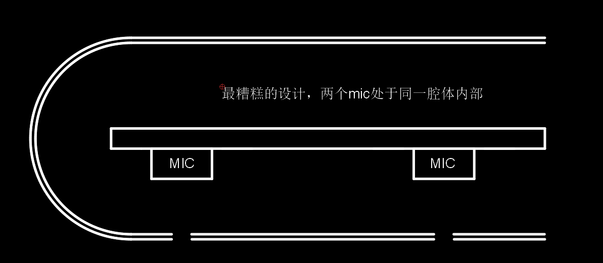
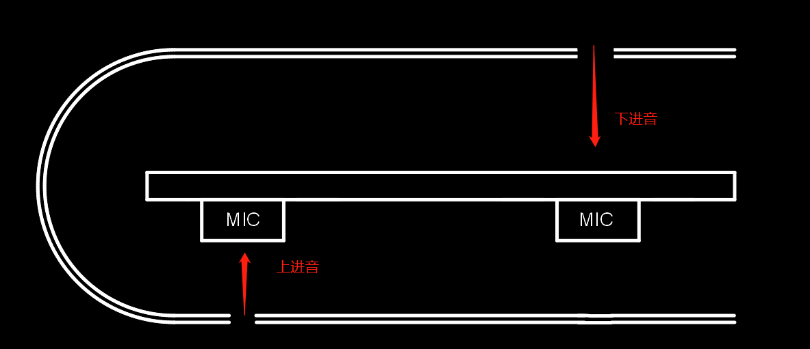
15.6.2.6. 开发生产测试指引
本章节主要说明在样机开发阶段、试产阶段和量产阶段需要注意的事项和建议，最终目的是为了达到量产阶段产品性能一致性。我们强烈建议：开发和试产阶段，一定要使用仪器进行客观指标测试，确保后续量产的合格率。 当我们参照ENC调试指引（“五、ENC参数与调试指引”）调试完一款ENC降噪样机之后，对着耳机的不同角度，比如0°，90°，180°讲话，正常的效果应该是0°的人声清晰舒适，对着90°和180°讲话，人声基本很小或者基本听不到。当满足这个主观感受之后，我们建议就可以多测试一些样机，来感受一致性了。 接下来就可以通过测试仪器，对样机的个个指标进行详细测试和评估。目前我们已经支持美格信、兆华仪器、指南测控仪器厂商，下面就以美格信（Megasig）测试仪器为例，做一下测试指引。
15.6.2.6.1. 具体数据指标测试
测试结构图如下：
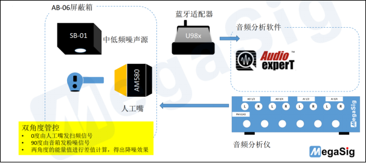
打开测试仪器厂商编写好的测试序列，点击开始测试，便可以测试样机的各个指标了。具体那些测试项需要测试，可以根据自己需求，进行增添和裁剪。 下面是某一个样机的实际测试数据图：
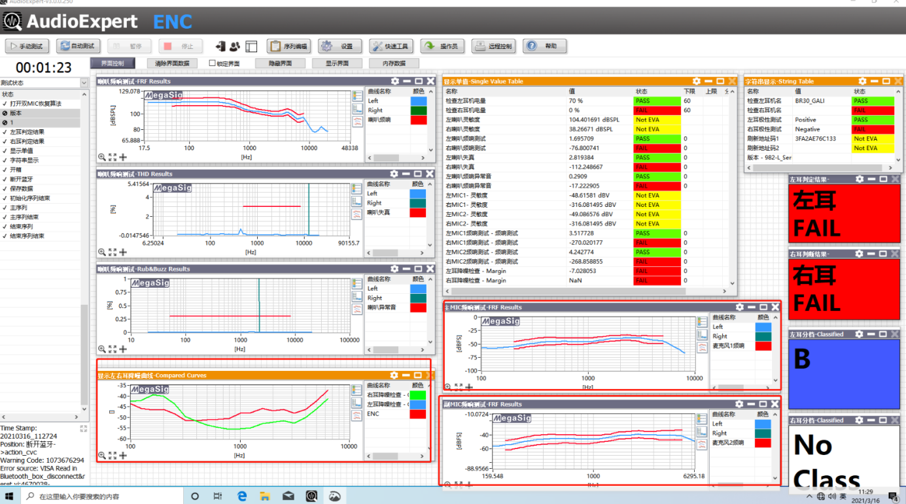
从上面的测试数据（本数据只测试一台样机），我们比较关心的是：左右耳降噪曲线，主副mic频响测试。
降噪曲线：客观评估样机的降噪深度和降噪频率范围。
主副mic频响：客观评估mic的一致性，这一步和我们做数据导出分析频响的目的是一样的。
15.6.2.6.2. 指向性测试（极性图）
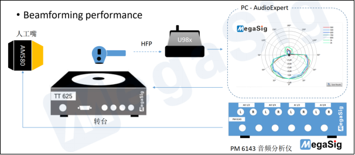
实物测试图如下：
步骤1：点击“快速工具”，在快速工具面板选择“蓝牙控制器”，连接DUT设备，选择“极性图测试”，进行设备的指向性测试

步骤2：蓝牙连接
step1：功能选择“Search BT Address”->“运行”
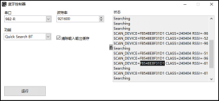
step2：搜索到目标地址，功能选择“Connect”，同时在蓝牙地址码填入目标蓝牙地址
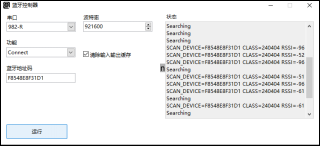
step3：设置声卡播放测试信号
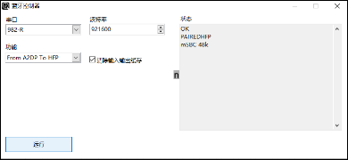
步骤3：极性图测试 蓝牙连接成功，先将转盘归0°，然后将样机的主副mic的连接线对着人工嘴，开始测试
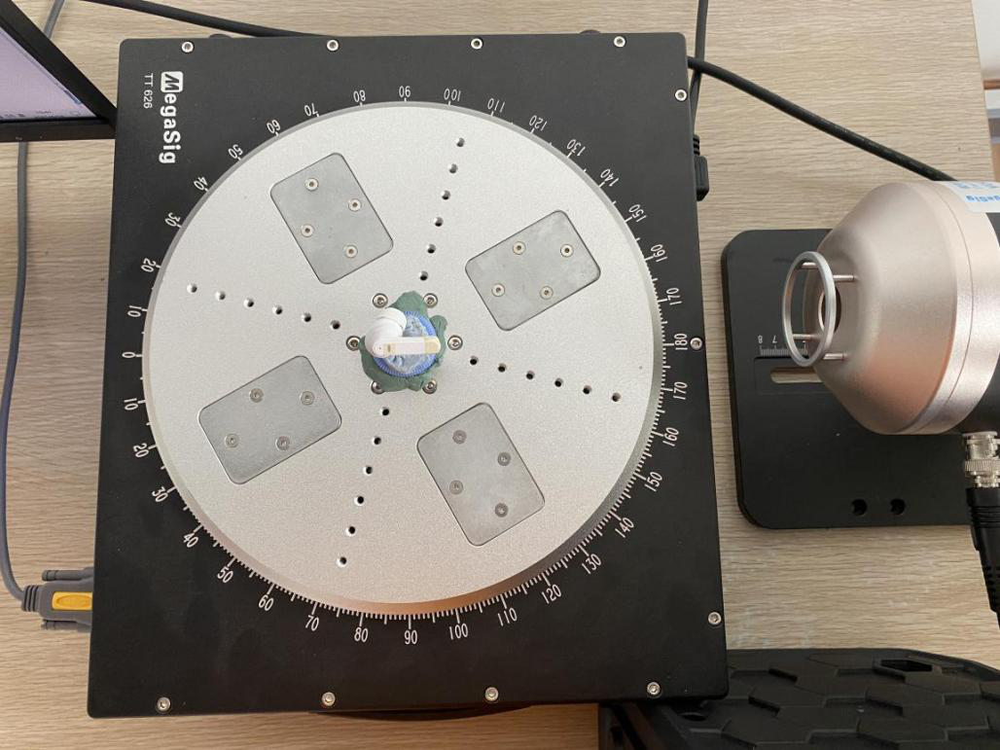
下面给出两个典型的双mic和单mic的指向性测试图
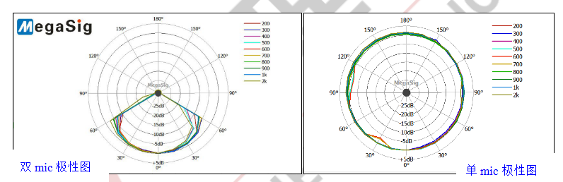
可以看到，合理的声学设计和参数配置，双mic的有效拾音范围为120°左右，而单mic表现出现是全方位角度的有效拾音。
15.6.3. 三麦ENC参数与调试指引（一）
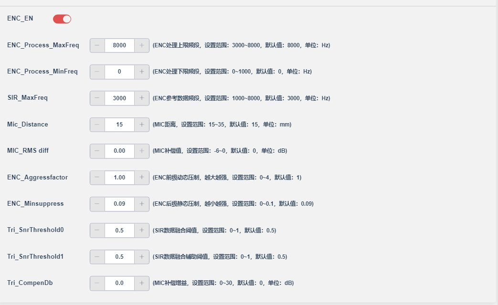
ENC_Process_MaxFreq : ENC处理的频率上限
ENC_Process_MinFreq : ENC处理的频率下限 理论上讲，线性情况下，ENC可以处理全频带的语音宽带信号（16k）。但是如果出现信号失真情况，会影响ENC的处理结果，严重情况下，会导致消除失真的语音信号。所以，比如5k以上信号出现失真情况，则把ENC_Process_MaxFreq设置成5000，超出部分不做ENC处理。当然，为了达到最佳效果，我们建议还是要保证待处理信号的保真性。
SIR_MaxFreq : ENC参考数据频段
Mic_Distance : 两个mic 拾音孔之间的物理距离，单位是mm 该值要求尽量精确，需要借助测量工具进行科学测量。
Mic RMS diff（Target_Signal_Degradation） : 目标信号到达主麦克风与副麦克风之间的幅度差异补偿。 该参数与两个mic之间的距离以及声学设计有关，影响ENC对噪声的抑制，以及对目标信号的保留。正常情况下，主mic信号大于等于参考mic信号。所以调试方法是，当主mic和参考mic的信号差异很小时，该值配1.0,当主mic信号大于参考mic时，则调小该值，即实现以下平衡：
主mic信号 * Target_Signal_Degradation = 参考mic信号
可以使用以下方法确定最佳参数：
1、在安静，低混响环境中(如消音室，室外空旷安静场地)，使用人工嘴正对主mic，播放扫频或白噪信号，分别采集主mic或副mic信号。分析幅度差异。
2、在安静，低混响环境中(如消音室，室外空旷安静场地)，并且打开ENC，使用人工嘴1正对主mic，使用人工嘴2正对副mic，分别在人工嘴2播放白噪，人工嘴1播放扫频，计算得到两次测试的频响FR1,FR2（FR1对应人工嘴1）,计算降噪增益频响 FR_ENC = FR1-FR2。迭代调整Target_Signal_Degradation，使FR_ENC最大。 注意：早期配置工具，Target_Signal_Degradation是需要手动计算的，新的工具，已经可以通过填写主副mic采集信号的rms幅值差，工具自动生成。
ENC_Aggressfactor : 动态侵略系数，越大压制越强
ENC_Minsuppress : 静态压制最小值，越大压制越小
Tri_SnrThreshold0 : SIR数据融合阈值，使用默认参数，需要在原厂工程师指导下修改
Tri_SnrThreshold0 : SIR数据融合辅助阈值，使用默认参数，需要在原厂工程师指导下修改
TRI_ComperDb : MIC补偿增益
调试指引
15.6.3.1. 配套工具
（1）安卓手机apk：audio_tools(“AudioTools使用手册/记录”章节) （2）PC音频录制工具（内置于“杰理SDK工具”，工具有帮助文档）
15.6.3.2. SDK配置
打开数据导出宏定义
通过工具连接DUT样机，按照正常使用方式佩戴金机，然后开始录制音频数据。该操作，目的是为了录制通话人声（目标人声）到达两个mic的差异性。录制环境请遵循以下原则：
（1）空旷无混响环境
（2）安静无吵杂环境
（3）说话声音正常音量
15.6.3.3. 数据分析
将通过spp导出到手机/电脑的主副mic的数据，用音频分析软件检查频响和幅度差异，为参数调节提供理论支持。
（1）幅度方式示例如下：
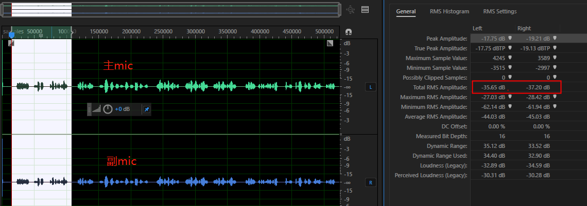
主mic的幅值：-35.65dB
副mic的幅值：-37.20dB
差值：-1.55dB（即Mic RMS diff）
根据公式：
主mic信号 * Target_Signal_Degradation = 参考mic信号
Target_Signal_Degradation = 10 ^ (-1.55 / 20)
= 0.8366
故配置参数Target_Signal_Degradation填0.83
【注】后续版本支持直接填写两个mic的幅度差，由工具自己计算Target_Signal_Degradation。 python计算如下：
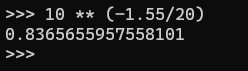
windows自带计算器计算如下：
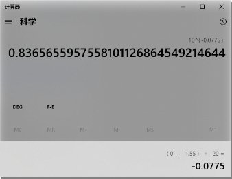
（2）频响分析示例
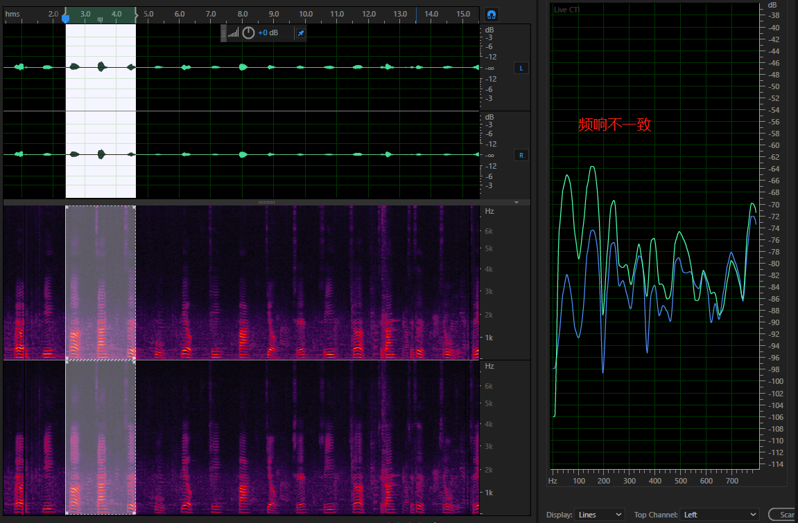
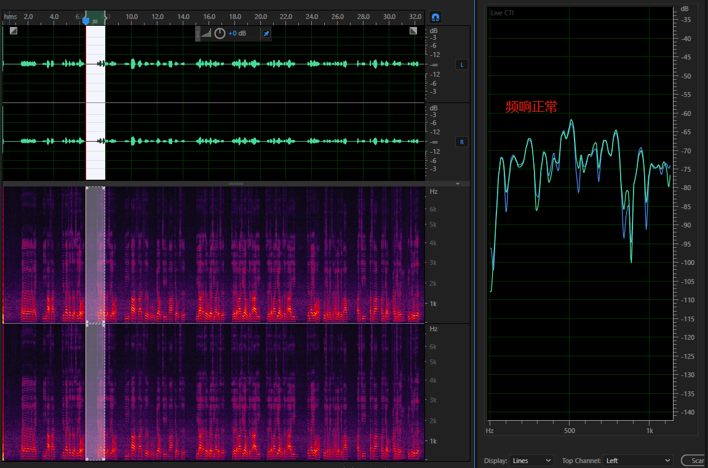
如果两个mic的频响曲线通过平移，3000Hz以内有较好的重合，表示频响正常。当然，如果全带宽频响一致，那是最好的了。如果出现频响严重不一致的问题，就需要检查电路或者mic的工艺一致性了。
15.6.3.4. 在线调试
使用audio_tools在线调试ENC参数，感受实时效果

15.6.4. 三麦ENC参数与调试指引（二）
三麦调试是在双麦调试的基础上增加一个FB麦传递函数文件的调式，步骤如下；
1、在配置工具的通话参数配置界面点击”3 mic Analysis”按钮打开分析工具

2、工具界面如下：

（1）Talk麦信号
主麦的声音信号，要求真实人耳佩戴，正常说话时，Talk麦和FB麦同时录制的声音
（2）FB麦信号
FB麦的声音信号，要求真实人耳佩戴，正常说话时，Talk麦和FB麦同时录制的声音
（3）FFT点数
固定512点
（4）采样率，单位：Hz
固定16000Hz
（5）开始时间，单位：s
需要分析的数据的起始时间，默认0s
（6）结束时间，单位：s
需要分析的数据的结束时间，默认10s
（7）主副麦补偿增益，单位dB
如果主副麦数据送到算法前做了数字放大，放大的dB需要填到这里，默认0dB
（8）输出文件名字：3mic_coeff.bin
（名字固定不可修改）3、将生成的3mic_coeff.bin文件放到下载目录，通过download.bat的-res参数把文件烧写到芯片里面
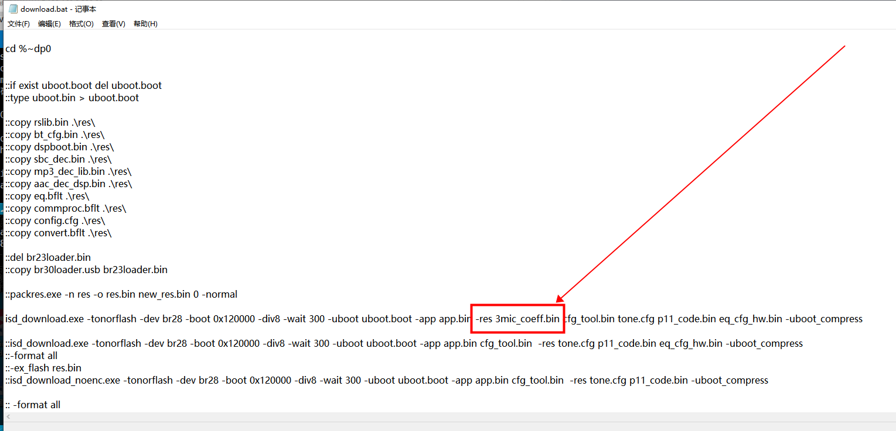
15.6.5. AEC模块

注1：双mic降噪ENC默认需要打开AEC模块。
注2：AEC模块的参数基本不用调试，这里是为了兼容性考虑，所以放到配置工具。如有需要，由原开发人员指导修改
global_minsuppress : 全局最小压制系数 针对某些信噪比比较差的信号经过各个算法模块处理过后，压制太多，导致声音损失严重。这个时候就可以通过配置全局最小压制系数来控制压制强度。该值越大，表示压制下限越高，压制效果越弱。0的时候最强，即最小可以压制成静音。
15.6.6. NLP模块
 NLP_Process_MaxFrequency : 处理频率上限
NLP_Process_MinFrequency : 处理频率下限
OverDrive ：影响回声压制系数计算，数值越大压制则越强，当值为0的时候则无任何回声压制作用。
NLP_Process_MaxFrequency : 处理频率上限
NLP_Process_MinFrequency : 处理频率下限
OverDrive ：影响回声压制系数计算，数值越大压制则越强，当值为0的时候则无任何回声压制作用。
15.6.7. AGC模块

AGC调试的是远端听到的声音。即mic采集到的人声传到远端手机端的声音大小。该模块是后级数字模块，即在一定的mic模拟增益的情况下，做完回音消除处理后，准备送到远端之前做的一个数字放大AGC。所以它只影响声音的大小。流程如下：

调试指引：
(1)增益单位是dB
(2)当mic采集到的数据人声大于speech_thr（近端声音放大的阈值）时放大MAX_GAIN
(3)当mic采集到的数据人声小于等于speech_thr（近端声音放大的阈值）时放大MIN_GAIN
(4)最大放大倍数和最小放大倍数之间，是通过fade_in和fade_out来淡入淡出的。比如单端讲话，这个时候淡入的步进就是：ndt_fade_in，淡出的步进就是：ndt_fade_out。讲话的时候淡入，没说话的时候淡出。双端讲话则用dt_fade_in和dt_fade_out，用法一样。
(5)speech_thr（近端声音放大的阈值）这个值根据mic采到的声音大小而定，如果太大，声音得不到均匀放大，即一会 放大max_gain，一会放大min_gain，听起来有可能忽大忽小。太小则有可能环境声也会一并放大。
(6)使用AGC模块实现单工通话功能 在某些情况下，整个通话回路产生了严重失真，导致算法无法处理好回音，这个时候，就只能选择单工的通话方式。 所谓单工，即远端讲话的时候，听不到近端的声音，远端不讲话，可以听到近端的声音。而近端，什么时候都可以听到远端的声音。所以可以在检测到远端有说话，就开始将近端声音淡出，远端没说话，再自行淡入，就可以实现单工功能。

【注意】ECHO_PRESENT_THR 的值，决定什么时候进入单工处理。考虑到远端讲话的声音一般是比较大的，所以可以适当将该值设置高一点，避免远端环境声或者其他非目标声音稍微一大，就听不到近端声音。比如：远端过来的目标人声集中在-20dB到-40dB之间，则可以把ECHO_PRESENT_THR设置成-45dB。但是也要注意不能设置太大，太大会导致远端说话有些字达不到设定阈值，从而进入不了双端讲话模式，实现不了单工，出现漏回音的情况。
15.6.8. 3MIC-AGC
3MIC通话算法支持配置工具选择新版的AGC算法，参数如下：

MIN_MAG_LEVEL : 语音能量放大下限阈值（单位dB,默认-50，范围（-90 ~-35dB）） MAX_MAG_LEVEL： 语音能量放大上限阈值（单位dB,默认-3，范围（-90 ~0dB）） ADDITIONAL_MAG_LEVEL： 语音补偿能量值（单位dB,默认0，范围（0 ~20dB）） CLIP_MAG_LEVEL ： 语音最大截断能量值（单位dB,默认-3，范围（-10 ~0dB）） FLOOR_MAG_LEVEL ： 语音最小截断能量值（单位dB,默认-70，范围（-90 ~-35dB）
基本原理：算法会对语音进行动态增益调整，调整的过程如果语音小于MAX_MAG_LEVEL时，则将语音压制到FLOOR_MAG_LEVEL大小，如果语音大于MAX_MAG_LEVEL时，则将语音压制到CLIP_MAG_LEVEL大小；ADDITIONAL_MAG_LEVEL是对语音进行额外的增益补偿。
15.6.9. 神经网络降噪DNS
神经网络降噪：收集大规模的干净语音和噪声数据集， 提取干净语音特征和带噪声语音特征，采用深度神经网络技术进行降噪模型的训练。训练出的降噪模型对输入信号实时进行噪声和语音的分类和回归，根据分类和回归的结果对语音信号进行噪声抑制，语音增强，提升信噪比。 对比传统降噪算法，采用深度神经网络进行语音降噪和增强，噪声估计更准确，语音失真更小，同时也能适应非平稳噪声的降噪处理。
优点 |
缺点 |
|
|---|---|---|
ANS |
对平稳噪声处理效果好，对ram和mips要求低 |
适应性差，对动态噪声处理效果欠佳 |
DNS |
噪声估计准确，语音保真度高，适应性好 |
对ram和mips要求高 |
15.6.9.1. 通用参数说明

DNS_GainFloor : 增益平滑系数，该系数主要用于控制降噪增益最小值。如果降噪后底噪较大，可以适当减小该值；如果出现吃音问题，可以适当提高该值，建议设定范围：0.05 ~ 0.3。
DNS_OverDrive : 降噪强度控制，DNS_OverDrive=1为降噪中间值，即算法评估出来的降噪强度。大于1的时候，即为加强降噪强度，小于1的时候，即为降低降噪强度，建议调节范围：0.2 ~ 3 。
NoiseLevel ：初始噪声水平。用来加速降噪收敛，跟mic信号的信噪比有关。Mic信号信噪比高，该值可以小一点，反之则需要稍微大一点。如果初始噪声设置过高，则可能导致一开始声音比较小声，如果过小，可能降噪收敛加速不明显。所以这个值需要具体方案如果出现以上可能问题时，适当修改。

15.6.9.2. 常见问题调试指引
15.6.9.2.1. 出现吃音或者一句话某个字某个字变得很小声问题
出现该问题时，首先要确认所处环境是不是信噪比很低(如小于-5dB)，即噪声比人声大很多，这种情形下，优化空间有限，调试步骤如下：
步骤1：通过调节mic的增益来缓解：如果mic的增益比较小(小于10dB)，可以适当提高mic增益来缓解吃音问题，建议调节范围不要超过15dB；提高mic增益可能会导致噪声增大，据实际情况调节。
步骤2：调节DNS_GainFloor和DNS_OverDrive参数：适当提高DNS_GainFloor 或 适当减小 DNS_OverDrive，可以通过配合gain_floor和over_drive适度调节。
15.6.9.2.2. 远端听到声音不均匀，忽大忽小
如果后处理开启了AGC模块，出现该问题时，请参照“章节十：常见问题FAQ”第二个问题进行确认调整。
15.6.10. JLSP WNC风噪检测模块
15.6.10.1. 参数说明
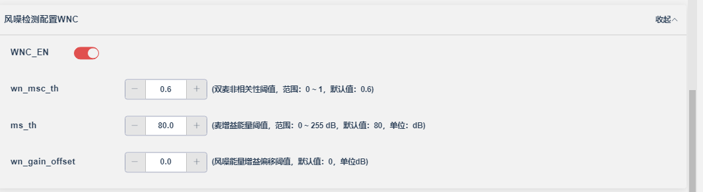
WN_Correlation_Threshold: 双麦非相关性阈值，根据双麦采集到的音频相关性取值，相关性越小取值越大，取值范围（0~1），默认取值0.6
WN_MassCenter_Threshold：麦增益能量阈值，用于衡量音频特定频段能量强度，需要根据实际风噪做确定；
确定方法如下：如果需要在大于3m/s风速下做降风噪，需要用样机在3m/s的实际环境下测试，使用int jlsp_tms_get_wind_detect_info(int *wd_flag, int *wd_val, int *wd_lev)接口实时获取当前的风噪强度wd_val，把这个风噪强度的值wd_val填给ms_th。
注意：有无风是由wn_msc_th和ms_th两个参数共同决定的。
WN_Gain_Offset：风噪能量增益偏移阈值，风噪参数确认后一般是不能修改mic增益的了，如果修改了mic的增益，mic数据变化的dB数需要填到wn_gain_offset这里
在audio_aec_dms.c或者audio_cvp_3mic.c打开 WIND_DETECT_INFO_SPP_DEBUG_ENABLE可在通话是通过蓝牙spp工具查看看风噪值
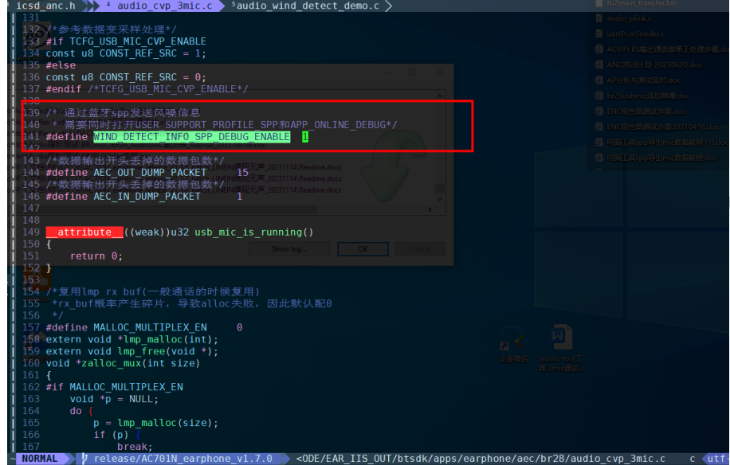
15.6.11. MFDT麦克风故障检测模块
功能介绍：使用双麦时，检测到其中一个麦克风异常（比如麦克风堵塞、麦克风坏了等），主动切换成单麦模式使用另一个正常的麦克风，保证通话能正常使用。
15.6.11.1. 参数说明
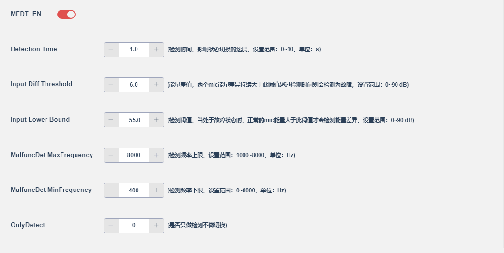 detect_time：检测时间，单位：秒 detect_eng_diff_thr：麦克风能量差值，两个mic能量差异持续大于此阈值超过检测时间则会检测为故障，设置范围：0~90dB detect_eng_lowerbound：检测阈值，当有麦克风能量低于此值时，才可是做检测 MalfuncDet_MaxFrequency：检测频率上限 MalfuncDet_MinFrequency：检测频率下限 OnlyDetect：是否之作检测不做单麦切换， 0 ：故障切换到单mic模式， 1：只检测不切换
15.6.11.2. 相关的接口
/*获取单/三麦切换状态
* 0: 正常三麦 ;
* 1: 副麦坏了，触发故障
* -1: 主麦坏了，触发故障
*/
int audio_cvp_tms_malfunc_state();
/*
* 获取mic的能量值，开了MFDT_EN才能用
* mic: 0 获取主麦能量
* mic：1 获取副麦能量
* return：返回能量值，[0~90.3],返回-1表示错误
*/
float audio_cvp_tms_mic_energy(u8 mic);
15.6.12. EQ参数
考虑到有些MIC物理特性，或者腔体声学设计缺陷，导致MIC采集到的声音比较低沉，这种情况可以适当的对声音做EQ处理。通话的EQ通常最多3段，就可以基本满足需求。具体什么EQ参数合适，根据实际情景进行配置。场景情景如下：
情景1：声音低沉，闷，不够透亮
（1）适当提高MIC的模拟增益
（2）使用high-pass的滤波器做简单的处理，低频适当衰减。
情景2：声音听起来有唇齿音 如果使用msbc，有些mic灵敏度比较高，MIC可以采到6.8k左右的唇齿音，如果介意，这个时候可以做一个high-shelf的滤波器处理。
15.6.12.1. 常见调试问题
（1）主mic远离嘴吧，距离超过1-2cm 由于耳机结构设计上的原因，正常佩戴时，主mic距离嘴巴距离超过1-2cm（比如5cm），这时候有两种处理方式：
方式1：改耳机模具结构，使得主mic和嘴巴的距离在1到2cm左右（推荐）。
方式2：在原有的结构上，调出最优效果
如果选择方式2，则前面第3小节提到的主副mic采集信号要有15到20dB的差值不再适用。这个时候，正常使用佩戴讲话，无背景噪声情况下，主mic收到有效人声幅度应至少高于副mic 5dB以上即可。然后配合ENC参数说明， 进行语音保留和噪声抑制深度的平衡调整。
15.6.13. 通话调试常见问题Q&A
15.6.13.1. 有噪声或者电流声
关闭回音消除，听mic的原始声音是否有噪声或者电流声，如果有，则优先处理源头的噪声,因为干扰声会 严重影响通话效果。可以做以下尝试： （1）通话的时候切换成LDO （2）降低发射功率 如果以上操作无效，再检查pcb是否合理
15.6.13.2. 声音忽大忽小，不均匀
（1）AGC放大参数是否合理（详细参考本文档“AGC参数”章节）
由于不同的mic灵敏度不一样，这里可以讲max_gain和min_gain设置成一样，确认是否是AGC原因：

改完如果正常，则逐步加小相应的阈值SPEECH_THR，小于该阈值的当成噪声不放大。或者缩小MaxGain和MinGain的差值，优化声音在两个增益之间过度淡入淡出带来的不均匀效果。 改完依旧不正常可能是“ANS参数设置不合理”。 （2）ANS参数是否合理 如果mic本身（或者由于电路干扰）采到的声音信噪比比较低，经过降噪模块，则可能会损耗比较多的人声部分，说话小声的部分会变得比较小声。这个时候可以参数减弱ANS的强度，优先调ANS_Suppress，步进不要超过0.1。注意不要调太弱，降噪太弱，声音听起来也会不那么干净。 如果当前没有回音问题，也可以尝试提高一些mic的增益，提高声音信噪比，提高ANS的降噪空间，再尝试通话，根据文档解决剩下的问题。
15.6.13.3. 回音消不掉
（1）使能AEC的所有模块
（2）硬件检查
查看各个电源配置电压差是否满足要求，
排查是不是硬件干扰过去的回音:可以将喇叭or麦换成等效电阻，AEC_MODE选择disable，如果这时候还存在回声，可能回音有部分来自于硬件的电路干扰，严重程度听回音大小。 如果暂时无法修改硬件环境，可通过降低DAC增益或者MIC增益，减小回音程度。
15.6.13.4. 远端听到的声音比较闷，不清晰
（1）确认麦的供电是否满足要求 具体查看的麦对应的datasheet关于电源的供电范围说明，调整偏置电压到合适的范围内 （2）大声或者对着麦克风说话，看是否有改善 如果有，则考虑MIC的增益设置不合理，加大MIC增益试试 （3）拆开样机外壳，试听声音效果
如果拆开样机外壳，声音明显改善，则怀疑是MIC的是声学设计影响了拾音效果
注1：MIC和外壳孔隙尽量小，有MIC套防震处理
注2：MIC开孔朝向尽量对着发声源（嘴巴）
注3：MIC内部有独立腔体，减少声音回荡抵消部分频率成分
（4）声音大，不清晰，浑浊 录制MIC原始信号（通过spp导出或者关闭算法，远端手机录音），分析具体的MIC信号频率成分（频响/频谱），注意底噪情况。使用EQ模块，对声音进行修饰处理： 一般处理是加一段高通处理，常用是100~200Hz截止。如果中高频不够，再加一个带通处理，比如800到1200H的增强处理。
15.6.13.5. 远端听到的声音有尾音
（1）可能mic本身（或者由于电路干扰）采到的声音信噪比比较低，目前的ANS参数无法压制mic的噪声，可以调整ANS参数，（详细参考本文档“ANS参数”章节） （2）如果调节ANS参数会带来忽大忽小问题，那么还原ANS参数。降低AGC的效果，逐步减小相应的放大上限MAX_GAIN，至声音比较干净，再轻微提高MIC的增益，对声音的大小进行补偿。